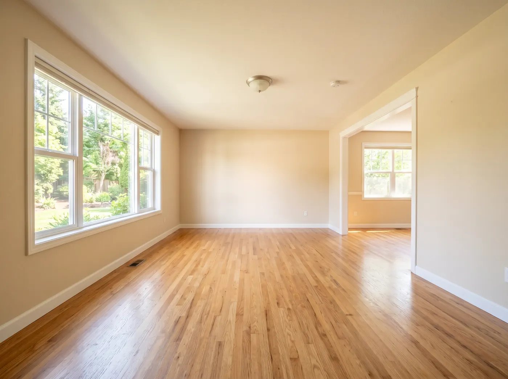

5 Things to Know Before an Estate Cleanout
Estate clean-outs are emotional and overwhelming. Here's how to approach one in the KC metro without burning out.

Estate cleanouts are hard. We'll make this easier.
Estate cleanouts in Kansas City don't happen in normal times. They happen after a loss, a move to assisted living, a downsize, or the end of a long chapter. If you're here, odds are good you're already overwhelmed — so this article is designed to be short, useful, and honest.
Five things worth knowing before you start an estate cleanout.
1. Sort before you haul — but don't over-sort
The single biggest trap in an estate cleanout is trying to sort every item into "keep, donate, sell, toss." You will lose weeks doing this. For most estates, a simpler approach works:
- Sentimental / heirloom pile — photos, letters, specific items family members asked for. Small. Protected. Moved first.
- Valuable pile — anything an estate sale company might want. A single afternoon is enough to decide this.
- Everything else — goes to a hauler who sorts donation-worthy items from disposal-bound ones.
That last point matters. A good KC junk removal crew will pull donation-quality furniture, appliances, and household goods out of your estate pile and make sure they get to a local donation partner — no extra work on your end.
2. Talk to the realtor before you clean
If the home is going on the market, the realtor might want you to leave certain items — staging furniture, appliances, even landscaping — in place. Calling them before a cleanout saves you from hauling out a fridge only to hear "wait, we wanted that to stay."
3. Documents are the hidden landmine
Tax returns, medical records, warranty paperwork, safe deposit box keys, titles, wills, insurance documents — these hide everywhere in estates. Common spots to check before anyone hauls anything:
- Desk drawers and filing cabinets (obvious)
- Kitchen drawers near the phone
- Coat pockets in hall closets
- Shoe boxes on top shelves
- Books (seriously — people hide cash in books)
- Inside the freezer (really)
Do a paper-hunt pass before you call a junk removal crew. A good hauler will flag anything that looks important, but you know your loved one's habits better than we do.
4. Estate sales are optional — and often not worth it
A lot of families default to "we should have an estate sale first." Sometimes that's right. Often it's not. Estate sales work well when:
- There's real furniture, collectibles, or antiques with proven value
- The home is available for 2-3 weekends of access
- You're okay with strangers walking through
For most estates, a direct cleanout — with donation-quality items routed to local charities — nets roughly the same financial outcome with a fraction of the emotional cost. The Junk Truck handles post-estate-sale cleanouts AND direct cleanouts. Both are fine choices.
5. You don't have to be there
This is the single thing families don't know: you don't have to be present for an estate cleanout. If you've already walked through, marked what stays, and flagged what matters — a professional crew can handle the rest and send you photos when it's done. That's especially useful for out-of-town family members managing a Kansas City estate from another state.
Working with a KC estate cleanout service
A good Kansas City estate cleanout service should:
- Give you a firm on-site quote before any work starts
- Offer compassionate, no-pressure service (this isn't a sales job)
- Sort donation-quality items into a separate pile and get them to local partners
- Coordinate with realtors and estate attorneys when needed
- Leave the home broom-clean
The Junk Truck does estate cleanouts across the KC metro, from the Plaza to Olathe. We treat every estate with the respect it deserves. Reach out when you're ready — no rush.